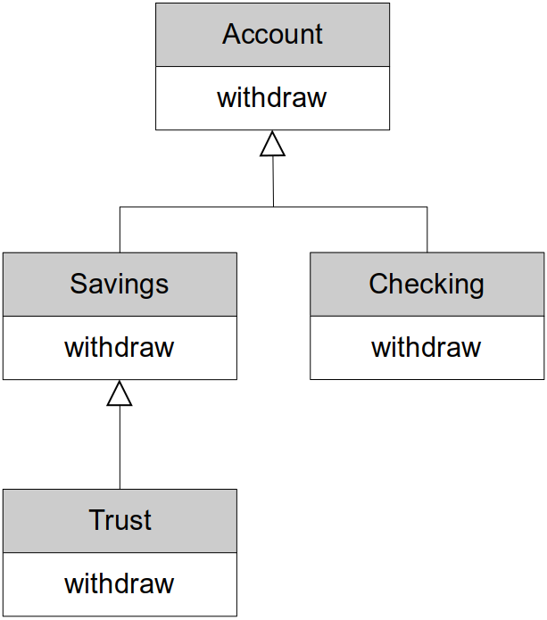

Home | Projects | Notes > C++ Programming > Polymorphism
Polymorphism
Overview
What is polymorphism?
Using base class pointers
Takes class hierarchies to a new level and enables us to think more abstractly and not have to worry about details
Static vs. dynamic binding of function calls (pros vs. cons)
Virtual functions
To achieve polymorphic functions (i.e., functions that are bound at run-time)
Virtual destructors
The
overrideandfinalspecifiersUsing base class references
To achieve dynamic polymorphism.
Pure virtual functions and abstract classes
Why we would want to use them as is and in interfaces.
Abstract classes as interfaces
What is Polymorphism?
Polymorphism is fundamental part of Object-Oriented Programming, and it allows us to think more abstractly when we write programs.
We can think deposit or print or draw, instead of thinking in specific versions of deposit, print and draw.
e.g., I can simply think 'deposit a $1000 to this account' not having to worry about what kind of account it is. I'll be sure that the correct
deposit()function will be called depending on what type of account I have. And this is all determined at run-time.
Polymorphism
Compile-time polymorphism / early binding / static binding
Binding happens at compile time
e.g., Function overloading, operator overloading
Run-time polymorphism / late binding / dynamic binding
Binding happens at run-time
Requires:
Inheritance
Base class pointer or base class reference
Virtual functions
Run-time polymorphism
Being able to assign different meanings to the same function at run-time
Although static binding helps fast execution of the program, sometimes we want things to be decided when program is running.
In C++ we can achieve this behavior by using base class pointers or references and declaring our functions as virtual functions.
Allows us to program more abstractly
Think general vs. specific
Let C++ figure out which function to call at run-time
Not the default in C++, run-time polymorphism is achieved via
Inheritance
Base class pointers or references
Virtual functions
Types of Polymorphism in C++

Static Binding vs. Dynamic Binding
Example 1
A non-polymorphic example - static binding

xxxxxxxxxx181// Assume that each type of account has its own 'withdraw()' function23Account a;4a.withdraw(1000); // calls Account::withdraw()56Savings s;7s.withdraw(1000); // calls Savings::withdraw()89Checking c;10c.withdraw(1000); // calls Checking::withdraw()1112Trust t;13d.withdraw(1000); // calls Trust::withdraw()1415Account *p = new Trust();16p->withdraw(1000); // calls Account::withdraw()17// but, we want the Trust object on the heap uses its own version18// of withdraw (Trust::withdraw())For the functions that are not delared as
virtual, the compiler will, by default, perform static binding at compile time. At compile time, the compiler does not know what type of object the pointerpwill be pointing to at run-time. All it knows at compile time is thatppoints to anAccounttype object. So, the compiler will go ahead and bindAccount'swithdraw()function when it seesp->withdraw(1000);.Let's see the following example:
xxxxxxxxxx181void display_account(const Account &acc)2{3acc.display(); // regardless of what object was passed in this will always use4// Account::display() because of the way the parameter acc was5// declared6}78Account a;9display_account(a);1011Savings s;12display_account(s);1314Checking c;15display_account(c);1617Trust t;18display_account(t);Whatever the object passed into the function
display_account()is, the function will display only theAccountpart of the passed object.There is a way for C++ to ask the
Accountobject being passed in what kind of account they are, and then depending on that, we can haveif...elsestatements that call the appropriate display methods. That's a bad coding practice, and it also makes us program less abstractly since then we have to figure out what kind of object we have and then call its functions.A polymorphic example - dynamic binding
Using
virtualfunctions allow us to use run-time polymorphism when using base class pointers or references.
xxxxxxxxxx171// Assume that each type of account has its own 'withdraw()' function23Account a;4a.withdraw(1000); // calls Account::withdraw()56Savings s;7s.withdraw(1000); // calls Savings::withdraw()89Checking c;10c.withdraw(1000); // calls Checking::withdraw()1112Trust t;13d.withdraw(1000); // calls Trust::withdraw()1415Account *p = new Trust();16p->withdraw(1000); // calls Trust::withdraw()17-----The idea of using
virtualfunctions tells the compiler not to bind it at compile-time, but instead, defer the binding to run-time. And at run-time, a check will occur to see exactly whatpis pointing to and then that object's function will be called.xxxxxxxxxx171void display_account(const Account &acc)2{3acc.display(); // will now always call the display function depending on the4// passed object's type at RUN-TIME!5}67Account a;8display_account(a);910Savings s;11display_account(s);1213Checking c;14display_account(c);1516Trust t;17display_account(t);The binding of
acc.display()will take place at run-time and call thedisplay()function based on the type of object being passed in.This is very powerful!!!
I can now write functions, methods, and data structures that use pointers and references to base class objects, and I know that the correct functions will be called at run-time.
Example 2
A non-polymorphic example - static binding
Following example addresses the limitation of static binding and the necessity for dynamic binding.xxxxxxxxxx6312// smart pointer34class Base5{6public:7void say_hello() const8{9std::cout << "Hello, I'm a Base class object" << std::endl;10}11};1213class Derived: public Base14{15public:16void say_hello() const17{18std::cout << "Hello, I'm a Derived class object" << std::endl;19}20};2122void greetings(const Base &obj) // this parameter can take23{ // 1) Base class object24std::cout << "Greetings: "; // 2) any object of Base class' derived class25obj.say_hello(); // because derived class 'is-a' base class2627// whatever type of object is passed in, since say_hello() function is not virtual,28// the compiler has no choice but to recognize obj as Base class object and therefore29// obj.say_hello() will always call Base::say_hello()30}3132int main(int argc, char *argv[])33{34Base b;35b.say_hello(); // compiler will see that this is not a virtual function (i.e., no36// dynamic polymorphism associated with it), and it knows that it37// needs to bind this statically (compiler only knows at compile-time38// that b is the type of Base so it is going to bind Base class'39// say_hello() function to this statement)40Derived d;41d.say_hello(); // similarly, the compiler will statically bind Derived class'42// say_hello() function to this statement4344// problem occurs when using the base class pointer or reference4546greetings(b); // Greetings: Hi, I'm a Base class object47greetings(d); // Greetings: Hi, I'm a Base class object4849Base *ptr = new Derived(); // ptr can hold address of any Base object and Derived50// 'is-a' Base object (so this is perfectly legal)5152ptr->say_hello(); // but here, since say_hello() is not virtual, the compiler has to53// bind it statically and since ptr is of type Base*,54// Base::say_hello() will be bound to this statement5556// smart pointer is no exception57std::unique_ptr<Base> ptr1 = std::make_unique<Derived>();58ptr1->say_hello(); // Hi, I'm a Base class object5960delete ptr;6162return 0;63}xxxxxxxxxx61Hello, I'm a Base class object2Hello, I'm a Derived class object3Greetings: Hello, I'm a Base class object4Greetings: Hello, I'm a Base class object5Hello, I'm a Base class object6Hello, I'm a Base class object
Using a Base Class Pointer
Let's assume that the following example uses the dynamic polymorphism:
xxxxxxxxxx111Account *p1 = new Account();2Account *p2 = new Savings();3Account *p3 = new Checking();4Account *p4 = new Trust();56p1->withdraw(1000); // Account::withdraw()7p2->withdraw(1000); // Savings::withdraw()8p3->withdraw(1000); // Checking::withdraw()9p4->withdraw(1000); // Trust::withdraw()1011// delete pointersNow, we can call the
withdraw()function using the base class pointers and C++ will figure out which function to bind at run-time based on the type of the object being pointed to by each pointer.Using this feature, above code can be rewritten more concisely as follows:
xxxxxxxxxx111Account *p1 = new Account();2Account *p2 = new Savings();3Account *p3 = new Checking();4Account *p4 = new Trust();56Account *array[] = {p1, p2, p3, p4};78for (auto i = 0; i < 4; ++i)9array[i]->withdraw(1000);1011// delete pointersThis example shows what "Programming more abstractly or generally" means! Here, you are simply thinking 'call the
withdraw()function for each account in the array.' That's it! No more details required!Similarly, this code can be rewritten using
vectorand range basedforloop as follows:xxxxxxxxxx111Account *p1 = new Account();2Account *p2 = new Savings();3Account *p3 = new Checking();4Account *p4 = new Trust();56vector<Account*> accounts {p1, p2, p3, p4};78for (auto acc_ptr : accounts)9acc_ptr->withdraw(1000);1011// delete pointersThink about what would happen if we added another class to our account hierarchy, say a
Bondaccount. None of the code that we have that works with account objects needs to be changed. Since a bond account is an account, it will automatically work with our existing code.[!] Note: Be careful when you're using raw pointers and collections such as vectors. It is better to use smart pointers in this type of examples.
virtual Functions
virtualfunctions in a base class MUST be "defined" unless they are declared using thepurespecifier.Redefined functions are bound statically
When we derive a class from base class, we can redefine the base class' functions behaviors in the derived class. This creates a specialized version of the function specific to the derived class.
If we don't use the
virtualkeyword with these functions, then they're statically bound at compile-time.
Overridden functions are bound dynamically.
We do this by declaring the function to be
virtual.
virtualfunctions are overridden functions.Allows us to think abstractly by treating all objects in the hierarchy as objects of the base class.
Once we declare a function as virtual, then that function is virtual all the way down the class hierarchy from this point forward.
Declaring
virtualfunctions in the base class:Declare the function you want to override as virtual in the base class
Virtual functions are virtual all the way down the hierarchy from this point
Dynamic polymorphism only via the base class pointer or reference
xxxxxxxxxx71// base class2class Account3{4public:5virtual void withdraw(double amount) { /* code */ };6. . .7};This makes
withdraw()avirtualfunction which means it can be overridden in derived classes and will be bound dynamically at run-time when we use a base class pointer or reference.
Declaring
virtualfunctions in the derived class:Override the function in the derived classes
Function signature and return type must match EXACTLY
If does not match, the compiler will regard it as redefinition and statically bind it.
Once declared as a virtual function, the
virtualkeyword is no longer required but is best practice to specify it down the class hierarchy.If you don't provide an overridden version it is inherited from it's base class
xxxxxxxxxx71// derived class2class Checking : public Account3{4public:5virtual void withdraw(double amount) { /* code */ };6. . .7};
Remember!
virtualfunctions are dynamically bound ONLY when they are called via a base class pointer or reference. Otherwise, they are statically bound.Whenever you have
virtualfunctions, you need to havevirtualdestructors.
virtual Destructors
Problems can happen when we destroy polymorphic objects.
e.g., Deleting a polymorphic object that doesn't have a virtual destructor could lead to unexpected behavior.
If a derived class is destroyed by deleting its storage via the base class pointer and the class does not have a
virtualdestructor, then the behavior is undefined by the C++ standard.If this is the case, only the destructor of the pointer type class (i.e., base class) will be called and it is possible that the derived class' specific operations will not go through the proper termination process (e.g., writing buffers out, closing files, deleting pointers to the dynamically allocated memory space, etc.) which could potentially lead to a serious situation such as memory leak.
Derived objects must be destroyed in the correct order starting at the correct
If a class has a
virtualfunctions, ALWAYS provide a publicvirtualdestructor. If base class destructor isvirtualthen all derived destructors are alsovirtual. (No need to provide thevirtualkeyword again, but it's best practice to do so.)xxxxxxxxxx171// base class2class Account3{4public:5virtual void withdraw(double amount) { /* code */ };6virtual ~Account(); // simple solution for the potentially serious situation7. . .8};910// derived class11class Checking : public Account12{13public:14virtual void withdraw(double amount) { /* code */ };15virtual ~Checking(); // simple solution for the potentially serious situation16. . .17};If none of these class had
virtualdestructorxxxxxxxxxx41Account *p = new Checking();23delete p; // this will call the destructor of Account class ONLY! leaving behind4// some of the Checking object's attributes not taken care ofRule is simple!
If you've got a class and it's got a
virtualfunction, give it avirtualdestructor as well.FYI, there's no such thing as a
virtualconstructor and it doesn't even makes sense at all.
The override Specifier
We can override base class virtual functions.
The function signature and return type must be EXACTLY the same.
If they are different then we have redefinition NOT overriding.
This small mistake is really difficult to spot. So, be careful!
Redefinition is statically bound.
Overriding is dynamically bound.
C++11 provides the
overridespecifier to have the compiler ensure overriding.You can add this specifier to the functions you're writing in your derived class, and the C++ compiler will ensure that you're indeed overriding and not redefining.
This is a simple addition to the language but a very useful one.
Example:
xxxxxxxxxx201class Base2{3public:4virtual void say_hello const5{6std::cout << "Hello - I'm a Base class object" << std::endl;7}8virtual ~Base() {}9};1011class Derived : public Base12{13public:14virtual void say_hello()15{16// Notice I forgot the const - NOT OVERRIDING!17std::cout << "Hello - I'm a Derived class object" << std::endl;18}19virtual ~Derived();20};L14: Since the function signatures are not exactly the same, the C++ compiler considers this function redefinition and NOT overriding. It will compiler just fine since this is perfectly legal.
xxxxxxxxxx51Base *p1 = new Base();2p1->say_hello(); // "Hello - I'm a Base class object" (Bound dynamically)34Base *p2 = new Derived();5p2->say_hello(); // "Hello - I'm a Base class object" (Bound statically to base class' method)Not what we expected!
say_hello()function signatures are different, soDerivedredefinessay_helloinstead of overriding it!We can easily prevent this error by using the C++11
overridespecifier.xxxxxxxxxx191class Base2{3public:4virtual void say_hello const5{6std::cout << "Hello - I'm a Base class object" << std::endl;7}8virtual ~Base() {}9};1011class Derived : public Base12{13public:14virtual void say_hello() override // Produces compiler error (Error: marked override but does not override)15{16std::cout << "Hello - I'm a Derived class object" << std::endl;17}18virtual ~Derived();19};L14: Now with the
oeverridekeyword, the compiler will generate an error that will help us fix the hard-to-spot issue.
final Specifier
C++11 provides the
finalspecifier which can be used in two contexts.When used at the class level, it prevents a class from being derived from or subclassed.
In some cases, this is done for better compiler optimization.
Other times, it may be done to ensure that objects are copied safely without slicing.
This is done for better compiler optimization.
When used at the method level, it prevents virtual method from being overridden in derived classes.
This can also be done for better compiler optimization.
Example -
finalkeyword used at the class levelxxxxxxxxxx91class My_Class final // My_Class cannot be derived from2{3...4};56class Derived final : public Base // Derived cannot be derived from7{8...9};If you try to derive a class from these classes, the compiler will generate a compiler error.
Example -
finalkeyword used at the method levelxxxxxxxxxx151class A2{3public:4virtual void do_something();5};67class B : public A8{9virtual void do_something() final; // prevent further overriding10};1112class C: public B13{14virtual void do_something(); // COMPILER ERROR - Can't override15};
Using Base Class Reference
We can also use base class references and have polymorphic function calls as we could by using the base class pointers.
Useful when we pass objects to functions that expect a base class reference
Example of using references to achieve dynamic binding of
virtualfunctions:xxxxxxxxxx71Account a;2Account &ref = a;3ref.withdraw(1000); // Account::withdraw()45Trust t;6Account &ref1 = t;7ref1.withdraw(1000); // Trust::withdraw() <--- dynamic bound!Also,
xxxxxxxxxx101void do_withdraw(Account &account, double amount)2{3account.withdraw(amount); // since withdraw() is a virtual function, it is bound dynamically4}56Account a;7do_withdraw(a, 1000); // Account::withdraw()89Trust t;10do_withdraw(t, 1000); // Trust::withdraw()
Abstract Classes and Pure virtual Functions
Abstract class
Cannot instantiate objects
These classes are used as base classes in inheritance hierarchies
Often referred to as Abstract Base Class
Too generic to create objects from
e.g.,
Shape,Employee,Account,Player, etc.
Serves as parent to derived classes that may have objects
Contains at least one pure virtual function
Concrete class
Used to instantiate objects from
All their member functions must be "defined"
e.g.,
Checking Account,Savings Accountin an account hierarchye.g.,
Faculty,Staffin an employee hierarchye.g.,
Enemy,Level Bossin a player hierarchy
[!] Note: If there is an intermediary class that inherits the base class but does not implement (define) the pure virtual function(s) that it inherited, then that intermediary class is also abstract base class.
Pure Virtual Function
Used to make a class abstract
Specified with
=0in its declarationxxxxxxxxxx11virtual void function() = 0; // pure virtual functionTypically do not provide implementations since it's really up to the derived concrete classes to define this behavior (But, it is possible to give them an implementation)
This is very useful when it doesn't make sense for a base class to have an implementation, but it does make sense in concrete classes.
Derived classes MUST override the pure virtual functions in the base class in order for it to be a concrete class.
If the derived class does not override then the derived class is also abstract
Used when it doesn't make sense for a base class to have an implementation (But, concrete classes must implement it)
xxxxxxxxxx11virtual void draw() = 0; // in the Shape classThe concept of a shape is too general or too abstract to have shape objects in our system. So, we can define the
draw()function as a pure virtual function in the shape class, and that not only makes it an abstract class, but it also forces all derived classes to implement the draw function if they want to be concrete classes.Same thing can be said about the
Playerclass:xxxxxxxxxx11virtual void defend() = 0; // in the Player classExamples
Following
Shapeclass has pure virtual functions so it is abstract class and therefore cannot directly instantiate objects.xxxxxxxxxx151class Shape // abstract class2{3private:4// attributes common to all shapes5public:6virtual void draw() = 0; // pure virtual function7virtual void rotate() = 0; // pure virtual function8virtual ~Shape();9. . .10};1112. . .1314Shape shape; // Compiler ERROR: Can't instantiate an abstract class15Shape *p = new Shape(); // Compiler ERROR: Can't instantiate an abstract classFollowing
Open_Shapeclass is still an abstract class because it does not override the virtual functions declared in its base (Shape) class.xxxxxxxxxx51class Open_Shape : public Shape // abstract class2{3public:4virtual ~Open_Shape() {}5};Following
Circleclass has no pure virtual functions so it is concrete class and therefore can instantiate objects. (All virtual functions of the base class are overridden.)xxxxxxxxxx221class Circle : public Shape // concrete class2{3private:4// attributes common to all shapes5public:6virtual void draw() override // override keyword is not mandatory here7{8// code to draw a circle9}10virtual void rotate() override // override keyword is not mandatory here11{12// code to rotate a circle13}14virtual ~Circle();15. . .16};1718. . .1920Shape *p = new Circle(); // OK21p->draw(); // OK22p->rotate(); // OKThe real power of the pure virtual functions is to really force all the derived concrete classes to implement those functions.
Abstract Classes as Interfaces
An interface class in C++ is a class that has only pure virtual functions.
These functions provide a general set of services that users of the class can use.
In order for them to be useful, these pure virtual functions must be declared as public.
Any class that wants to be a concrete class and support the interface provided by the interface class can override the pure virtual functions and implement these services as needed.
Remember, every service must be implemented, and C++ will strictly enforce type information. So, when overriding the function, prototypes must match exactly.
Unlike Java and C#, C++ does not provide a specific keyword or way to create an interface as part of the c++ core language. Therefore, in C++ we use abstract classes with pure virtual functions to achieve the concept of an interface.
Example 1
Suppose we want to be able to provide
Printablesupport for any object we wish without knowing it's implementation at compile time.xxxxxxxxxx11std::cout << any_object << std::endl;Then,
any_objectmust conform to thePrintableinterface.xxxxxxxxxx311class Printable2{3friend ostream& operator<<(ostream&, const Printable &obj);4// this friend function will allow us to print any type of object that conforms5// to this interface6public:7virtual void print(ostream &os) const = 0;8virtual ~Printable() {};9. . .10};1112// overloaded operator function13// - this would dynamically bind to the print() function of whatever object type was14// passed in since we know that that object is printable and we have a reference to15// it16ostream& operator<<(ostream &os, const Printable &obj)17{18obj.print(os);19return os;20}2122class Any_Class : public Printable23{24public:25// must override Printable::print()26virtual void print(ostream &os) override27{28os << "Hi from Any_Class";29}30. . .31};[!] Note: Here the overloaded operator function is not a member function of
Printclass, and therefore will not be inherited down to the class hierarchy.Now,
Any_Classis printable. Let's createAny_Classobjects and print them:xxxxxxxxxx151Any_Class *p = new Any_Class();2cout << *p << endl;34void function1(Any_Class &obj)5{6cout << obj << endl;7}89void function2(Printable &obj)10{11cout << obj << endl;12}1314function1(*p); // "Hi from Any_Class"15function2(*p); // "Hi from Any_Class"Example 2
Here, we have a
Shapeclass that only has pure virtual functions. So, it's an abstract class, and it can also be used as an interface class.xxxxxxxxxx81class I_Shape2{3public:4virtual void draw() = 0;5virtual void rotate() = 0;6virtual ~Shape() {};7. . .8};Sometimes you'll see classes that are intended to be used as interface classes names with a capital "
I_" preceding the class name.A concrete class
Circlecan be written as:xxxxxxxxxx81class Circle : public I_Shape2{3public:4virtual void draw() override { /* code */ };5virtual void rotate() override { /* code */ };6virtual ~Circle();7. . .8};So, we can now use pointers to
I_Shapeobejcts to use dynamic polymorphism.xxxxxxxxxx131vector<I_Shape*> shapes;23I_Shape *p1 = new Circle();4I_Shape *p2 = new Line();5I_Shape *p3 = new Square();67for (auto const &shape : shapes)8{9shape->rotate();10shape->draw();11}1213// delete pointersExample 3 (Comprehensive)
xxxxxxxxxx125123class I_Printable4{5friend std::ostream& operator<<(std::ostream &os, const I_Printable &obj);6public:7virtual void print(std::ostream &os) const = 0;8};910// all the classes we are going to define in this example are I_Printable's derived11// class so by using the base class reference 'obj' we will be able to use dynamic12// polymorphism to match the appropirate one13std::ostream& operator<<(std::ostream &os, const I_Printable &obj)14{15obj.print(os);16return os;17}1819class Account : public I_Printable20{21public:22virtual void withdraw(double amount)23{24std::cout << "Account::withdraw()" << std::endl;25}26virtual void print(std::ostream &os) const override27{28os << "Account display";29}30virtual ~Account() {}31};3233class Checking : public Account34{35public:36virtual void withdraw(double amount)37{38std::cout << "Checking::withdraw()" << std::endl;39}40virtual void print(std::ostream &os) const override41{42os << "Checking display";43}44virtual ~Checking() {}45};4647class Savings : public Account48{49public:50virtual void withdraw(double amount)51{52std::cout << "Savings::withdraw()" << std::endl;53}54virtual void print(std::ostream &os) const override55{56os << "Savings display";57}58virtual ~Savings() {}59};6061class Trust : public Account62{63public:64virtual void withdraw(double amount)65{66std::cout << "Trust::withdraw()" << std::endl;67}68virtual void print(std::ostream &os) const override69{70os << "Trust display";71}72virtual ~Trust() {}73};7475class Dog : public I_Printable76{77public:78virtual void print(std::ostream &os) const override79{80os << "Woof woof";81}82virtual ~Dog() {}83};8485// this function will take any derived class objects of I_Printable86// (e.g., Account objects, Savings objects, Dog objects, etc.)87void print(const I_Printable &obj)88{89std::cout << obj << std::endl;90}9192int main(int argc, char *argv[])93{94// static binding9596Account a;97std::cout << a << std::endl; // Account display9899Checking c;100std::cout << c << std::endl; // Checking display101102Savings s;103std::cout << s << std::endl; // Savings display104105Trust t;106std::cout << t << std::endl; // Trust display107108Dog d;109std::cout << d << std::endl; // Woof woof110111// dynamic binding112113Account *p1 = new Account();114std::cout << *p1 << std::endl; // Account display115116Account *p2 = new Checking();117std::cout << *p2 << std::endl; // Checking display118119Dog *p3 = new Dog();120std::cout << *p3 << std::endl; // Woof woof121122print(*p3); // Woof woof123124return 0;125}xxxxxxxxxx91Account display2Checking display3Savings display4Trust display5Woof woof6Account display7Checking display8Woof woof9Woof woof
V-Table (Virtual Table)
Example
xxxxxxxxxx24123class Base4{5public:6virtual void func1() { std::cout << "func1()" << std::endl; }7virtual void func2() { std::cout << "func2()" << std::endl; }8};910class Derived : public Base11{12public:13virtual void func1() { std::cout << "Derived::func1" << std::endl; }14void func3() { std::cout << "func3" << std::endl; }15};1617int main(int argc, char *argv[])18{19Base *p1 = new Base();20p1->func1();2122Base *p2 = new Derived();23p2->func1();24}xxxxxxxxxx21func1()2Derived::func1

Advantages Polymorphism Has Over Normal Inheritance
Polymorphism helps make your code simpler, more scalable, more general, etc.
Gives you ability to access to all the derived classes and their features through the base class pointer or reference.
If you did not have polymorphism, and you have a container that contains the derived classes you to do something with:
You would go through the iterator and grab every object out of the iterator, then you would have to ask the object "what are you?" and then you would down cast that to the pointer of that object and then execute that behavior of that class object.
siwtch-casestatement would be a good construct to use to implement this behavior without polymorphism
With polymorphism, just by accessing the derived objects through the base class pointer or reference you will be able to execute those objects' specific behaviors.
References
Mitropoulos, F. (2022). Beginning C++ Programming - From Beginner to Beyond [Video file]. Retrieved from https://www.udemy.com/course/beginning-c-plus-plus-programming/